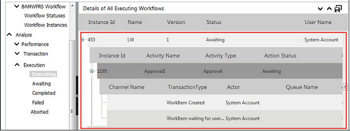
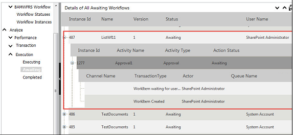
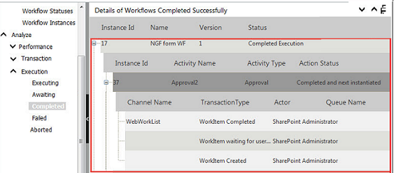
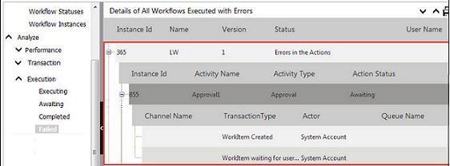
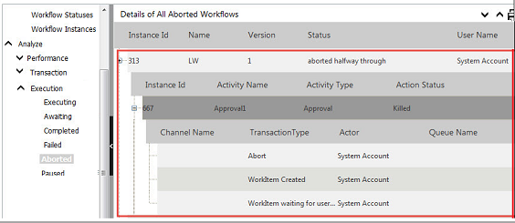
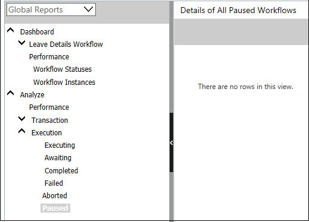

No
Execution Reports
This type of report presents workflow execution information related to execution status. There are four types of reports in this group.
Executing
This report presents details related to executing workflows. The following image shows the Executing report. It has been split into two for convenience.

Awaiting
This report presents details related to workflows awaiting execution. The following image shows the Awaiting report. It has been split into two for viewing convenience.

Completed
This report presents details related to completed workflows. The following image shows the Completed report view. There are no rows in the report because there are no completed workflows to represent.

Failed
This report presents details related to the failed workflows. The following image shows the Failed reports.

Aborted
This report presents details related to the aborted workflows. The following image shows the Aborted report view.
Quickflows completed with errors is listed under Aborted instead of getting listed under Failed.

Paused
This report presents details of the paused workflows. The following image shows the Paused report view.
